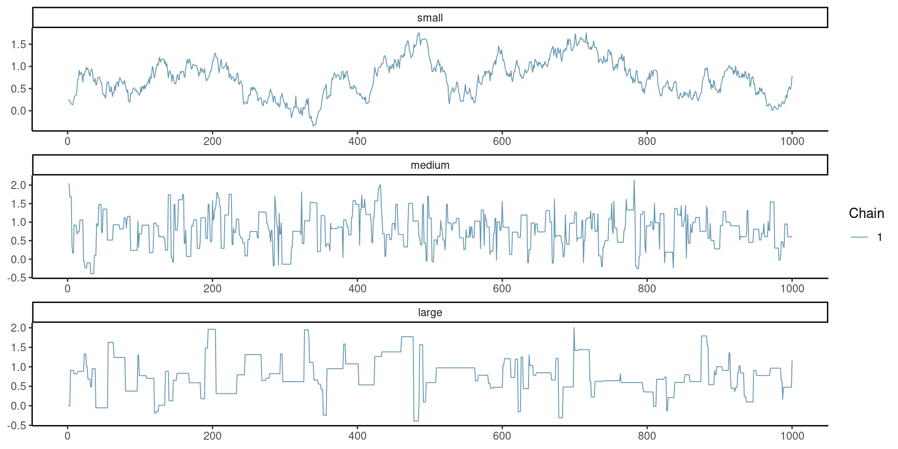
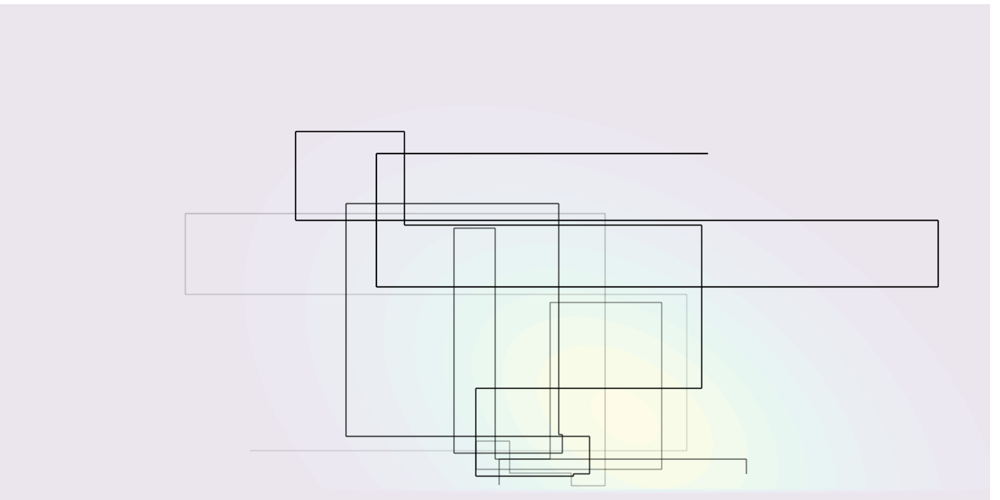

Bayesian modelling
Markov chain Monte Carlo: Gibbs sampling
Last compiled Thursday Mar 20, 2025
Reminder: Metropolis–Hastings algorithm
Starting from an initial value \(\boldsymbol{\theta}_0\):
- draw a proposal value \(\boldsymbol{\theta}_t^{\star} \sim q(\boldsymbol{\theta} \mid \boldsymbol{\theta}_{t-1})\).
- Compute the acceptance ratio \[ R = \frac{p(\boldsymbol{\theta}_t^{\star})}{p(\boldsymbol{\theta}_{t-1})}\frac{q(\boldsymbol{\theta}_{t-1} \mid \boldsymbol{\theta}_t^{\star} )}{q(\boldsymbol{\theta}_t^{\star} \mid \boldsymbol{\theta}_{t-1})} \]
- With probability \(\min\{R, 1\}\), accept the proposal and set \(\boldsymbol{\theta}_t \gets \boldsymbol{\theta}_t^{\star}\), otherwise set the value to the previous state, \(\boldsymbol{\theta}_t \gets \boldsymbol{\theta}_{t-1}\).
Calculations
We compute the log of the acceptance ratio, \(\ln R\), to avoid numerical overflow, with the log posterior difference \[ \ln \left\{\frac{p(\boldsymbol{\theta}_t^{\star})}{p(\boldsymbol{\theta}_{t-1})}\right\} = \ell(\boldsymbol{\theta}_t^{\star}) + \ln p(\boldsymbol{\theta}_t^{\star}) - \ell(\boldsymbol{\theta}_{t-1}) - \ln p(\boldsymbol{\theta}_{t-1}) \]
Compare the value of \(\ln R\) (if less than zero) to \(\log(U)\), where \(U \sim \mathsf{unif}(0,1)\).
What proposal?
The independence Metropolis–Hastings uses a global proposal \(q\) which does not depend on the current state (typically centered at the MAP)
This may be problematic with multimodal targets.
The Gaussian random walk takes \(\boldsymbol{\theta}_t^{\star} =\boldsymbol{\theta}_{t-1}+ \sigma_\text{p}Z\), where \(Z \sim \mathsf{Gauss}(0,1)\) and \(\sigma_\text{p}\) is the proposal standard deviation. Random walks allow us to explore the space.
Burn in
We are guaranteed to reach stationarity with Metropolis–Hastings, but it may take a large number of iterations…
One should discard initial draws during a burn in or warmup period if the chain has not reached stationarity. Ideally, use good starting value to reduce waste.
We can also use the warmup period to adapt the variance of the proposal.
Goldilock principle and proposal variance
Mixing of the chain requires just the right variance (not too small nor too large).
Figure 1: Example of traceplot with proposal variance that is too small (top), adequate (middle) and too large (bottom).
Correlograms for Goldilock
Figure 2: Correlogram for the three Markov chains.
Tuning Markov chain Monte Carlo
- Outside of starting values, the variance of the proposal has a huge impact on the asymptotic variance.
- We can adapt the variance during warmup by increasing/decreasing proposal variance (if acceptance rate is too large/small).
- We can check this via the acceptance rate (how many proposals are accepted).
Optimal acceptance rates
The following rules were derived for Gaussian targets under idealized situations.
- In 1D, rule of thumb is an acceptance rate of \(0.44\) is optimal, and this ratio decreases to \(0.234\) when \(D \geq 2\) (Sherlock, 2013) for random walk Metropolis–Hastings.
- Proposals for \(D\)-variate update should have proposal variance of roughly \((2.38^2/d)\times \boldsymbol{\Sigma}\), where \(\boldsymbol{\Sigma}\) is the posterior variance.
- For MALA (see later), we get \(0.574\) rather than \(0.234\)
Block update or one parameter at a time?
As with any accept-reject, proposals become inefficient when the dimension \(D\) increase.
This is the curse of dimensionality.
Updating parameters in turn
- increases acceptance rate (with clever proposals),
- but also leads to more autocorrelation between parameters
Solutions for strongly correlated coefficients
- Reparametrize the model to decorrelate variables (orthogonal parametrization).
- Block updates: draw correlated parameters together
- using the chain history to learn the correlation, if necessary
Parameter transformation
Parameters may be bounded, e.g. \(\theta_i \in [a,b]\).
- We can ignore this and simply discard proposals outside of the range, by setting the log posterior at \(-\infty\) outside \([a,b]\)
- We can do a transformation, e.g., \(\log \theta_i\) if \(\theta_i > 0\) and perform a random walk on the unconstrained space: don’t forget Jacobians for \(q(\cdot)\)!
- Another alternative is to use truncated proposals (useful with more complex algorithms like MALA)
Efficient proposals: MALA
The Metropolis-adjusted Langevin algorithm (MALA) uses a Gaussian random walk proposal \[\boldsymbol{\theta}^{\star}_t \sim \mathsf{Gauss}\{\mu(\boldsymbol{\theta}_{t-1}), \tau^2\mathbf{A}\},\] with mean \[\mu(\boldsymbol{\theta}_{t-1})=\boldsymbol{\theta}_{t-1} + \mathbf{A}\eta \nabla \log p(\boldsymbol{\theta}_{t-1} \mid \boldsymbol{y}),\] and variance \(\tau^2\mathbf{A}\), for some mass matrix \(\mathbf{A}\), tuning parameter \(\tau>0\).
The parameter \(\eta < 1\) is a learning rate. This is akin to a Newton algorithm, so beware if you are far from the mode (where the gradient is typically large)!
Higher order proposals
For a single parameter update \(\theta\), a Taylor series expansion of the log posterior around the current value suggests using as proposal density a Gaussian approximation with (Rue & Held, 2005)
- mean \(\mu_{t-1} = \theta_{t-1} - f'(\theta_{t-1})/f''(\theta_{t-1})\) and
- precision \(\tau^{-2} = -f''(\theta_{t-1})\)
We need \(f''(\theta_{t-1})\) to be negative!
This gives local adaption relative to MALA (global variance).
Higher order and moves
For MALA and cie., we need to compute the density of the proposal also for the reverse move for the expansion starting from the proposal \(\mu(\boldsymbol{\theta}_{t}^\star)\).
These methods are more efficient than random walk Metropolis–Hastings, but they require the gradient and the hessian (can be obtained analytically using autodiff, or numerically).
Modelling individual headlines of Upworthy example
The number of conversions nclick is binomial with sample size \(n_i=\)nimpression.
Since \(n_i\) is large, the sample average nclick/nimpression is approximately Gaussian, so write
\[\begin{align*} Y_i &\sim \mathsf{Gauss}(\mu, \sigma^2/n_i)\\ \mu &\sim \mathsf{trunc. Gauss}(0.01, 0.1^2, 0, 1) \\ \sigma &\sim \mathsf{expo}(0.7) \end{align*}\]
MALA: data set-up
MALA: define functions
# Create functions with the same signature (...) for the algorithm
logpost <- function(par, data, ...){
mu <- par[1]; sigma <- par[2]
no <- data$no
y <- data$y
if(isTRUE(any(sigma <= 0, mu < 0, mu > 1))){
return(-Inf)
}
dnorm(x = mu, mean = 0.01, sd = 0.1, log = TRUE) +
dexp(sigma, rate = 0.7, log = TRUE) +
sum(dnorm(x = y, mean = mu, sd = sigma/sqrt(no), log = TRUE))
}MALA: compute gradient of log posterior
MALA: compute maximum a posteriori
MALA: starting values and mass matrix
MALA: containers and setup
# Create containers for MCMC
B <- 1e4L # number of iterations
warmup <- 1e3L # adaptation period
npar <- 2L
prop_sd <- rep(1, npar) # tuning parameter
chains <- matrix(nrow = B, ncol = npar)
damping <- 0.8
acceptance <- attempts <- 0
colnames(chains) <- names(curr) <- c("mu","sigma")
# Proposal variance proportional to inverse hessian at MAP
prop_var <- diag(prop_sd) %*% Amat %*% diag(prop_sd)MALA: sample proposal with Newton step
for(i in seq_len(B + warmup)){
ind <- pmax(1, i - warmup)
# Compute the proposal mean for the Newton step
prop_mean <- c(curr + damping *
Amat %*% logpost_grad(curr, data = qdata))
# prop <- prop_sd * c(rnorm(npar) %*% cholA) + prop_mean
prop <- c(mvtnorm::rmvnorm(
n = 1,
mean = prop_mean,
sigma = prop_var))
# [...]MALA: reverse step
# Compute the reverse step
curr_mean <- c(prop + damping *
Amat %*% logpost_grad(prop, data = qdata))
# log of ratio of bivariate Gaussian densities
logmh <- mvtnorm::dmvnorm(
x = curr, mean = prop_mean,
sigma = prop_var,
log = TRUE) -
mvtnorm::dmvnorm(
x = prop,
mean = curr_mean,
sigma = prop_var,
log = TRUE) +
logpost(prop, data = qdata) -
logpost(curr, data = qdata)MALA: Metropolis–Hastings ratio
MALA: adaptation
if(i %% 100 & i < warmup){
# Check acceptance rate and increase/decrease variance
out <- hecbayes::adaptive(
attempts = attempts, # counter for number of attempts
acceptance = acceptance,
sd.p = prop_sd, #current proposal standard deviation
target = 0.574) # target acceptance rate
prop_sd <- out$sd # overwrite current std.dev
acceptance <- out$acc # if we change std. dev, this is set to zero
attempts <- out$att # idem, otherwise unchanged
prop_var <- diag(prop_sd) %*% Amat %*% diag(prop_sd)
}
} # End of MCMC for loopGibbs sampling
The Gibbs sampling algorithm builds a Markov chain by iterating through a sequence of conditional distributions.
Figure 3: Sampling trajectory for a bivariate target using Gibbs sampling.
Gibbs sampler
Split the parameter vector \(\boldsymbol{\theta} \in \boldsymbol{\Theta} \subseteq \mathbb{R}^p\) into \(m \leq p\) blocks, \[\boldsymbol{\theta}^{[j]}\quad j=1, \ldots, m\] such that, conditional on the remaining components of the parameter vector \(\boldsymbol{\theta}^{-[j]}\), the conditional posterior \[p(\boldsymbol{\theta}^{[j]} \mid \boldsymbol{\theta}^{-[j]}, \boldsymbol{y})\] is from a known distribution from which we can easily simulate.
Gibbs sampling update
At iteration \(t\), we can update each block in turn: note that the \(k\)th block uses the partially updated state \[\begin{align*} \boldsymbol{\theta}^{-[k]\star} = (\boldsymbol{\theta}_{t}^{[1]}, \ldots, \boldsymbol{\theta}_{t}^{[k-1]},\boldsymbol{\theta}_{t-1}^{[k+1]}, \boldsymbol{\theta}_{t-1}^{[m]}) \end{align*}\] which corresponds to the current value of the parameter vector after the updates.
Notes on Gibbs sampling
- Special case of Metropolis–Hastings with conditional density as proposal \(q\).
- The benefit is that all proposals get accepted, \(R=1\)!
- No tuning parameter, but parametrization matters.
- Automatic acceptance does not equal efficiency.
To check the validity of the Gibbs sampler, see the methods proposed in Geweke (2004).
Efficiency of Gibbs sampling
As the dimension of the parameter space increases, and as the correlation between components becomes larger, the efficiency of the Gibbs sampler degrades
Figure 4: Trace plots (top) and correlograms (bottom) for the first component of a Gibbs sampler with \(d=20\) equicorrelated Gaussian variates with correlation \(\rho=0.9\) (left) and \(d=3\) with equicorrelation \(\rho=0.5\) (right).
Gibbs sampling requires work!
- You need to determine all of the relevant conditional distributions, which often relies on setting conditionally conjugate priors.
- In large models with multiple layers, full conditionals may only depend on a handful of parameters (via directed acyclic graph and moral graph of the model; not covered).
Example of Gibbs sampling
Consider independent and identically distributed observations, with \[\begin{align*} Y_i &\sim \mathsf{Gauss}(\mu, \tau), \qquad i=1, \ldots, n) \\\mu &\sim \mathsf{Gauss}(\nu, \omega)\\ \tau &\sim \mathsf{inv. gamma}(\alpha, \beta) \end{align*}\]
The joint posterior is not available in closed form, but the independent priors for the mean and variance of the observations are conditionally conjugate.
Joint posterior for Gibbs sample
Write the posterior density as usual, \[\begin{align*} &p(\mu, \tau \mid \boldsymbol{y}) \propto \tau^{-\alpha-1}\exp(-\beta/\tau)\\ &\quad \times \tau^{-n/2}\exp\left\{-\frac{1}{2\tau}\left(\sum_{i=1}^n y_i^2 - 2\mu \sum_{i=1}^n y_i+n\mu^2 \right)\right\}\\&\quad \times \exp\left\{-\frac{(\mu-\nu)^2}{2\omega}\right\} \end{align*}\]
Recognizing distributions from posterior
Consider the conditional densities of each parameter in turn (up to proportionality): \[\begin{align*} p(\mu \mid \tau, \boldsymbol{y}) &\propto \exp\left\{-\frac{1}{2} \left( \frac{\mu^2-2\mu\overline{y}}{\tau/n} + \frac{\mu^2-2\nu \mu}{\omega}\right)\right\}\\ p(\tau \mid \mu, \boldsymbol{y}) & \propto \tau^{-n/2-\alpha-1}\exp\left[-\frac{\left\{\frac{\sum_{i=1}^n (y_i-\mu)^2}{2} + \beta \right\}}{\tau}\right] \end{align*}\]
Gibs sample
We can simulate in turn \[\begin{align*} \mu_t \mid \tau_{t-1}, \boldsymbol{y} &\sim \mathsf{Gauss}\left(\frac{n\overline{y}\omega+\tau \nu}{\tau + n\omega}, \frac{\omega \tau}{\tau + n\omega}\right)\\ \tau_t \mid \mu_t, \boldsymbol{y} &\sim \mathsf{inv. gamma}\left\{\frac{n}{2}+\alpha, \frac{\sum_{i=1}^n (y_i-\mu)^2}{2} + \beta\right\}. \end{align*}\]
Data augmentation and auxiliary variables
When the likelihood \(p(\boldsymbol{y}; \boldsymbol{\theta})\) is intractable or costly to evaluate (e.g., mixtures, missing data, censoring), auxiliary variables are introduced to simplify calculations.
Consider auxiliary variables \(\boldsymbol{U} \in \mathbb{R}^k\) such that \[\int_{\mathbb{R}^k} p(\boldsymbol{U}, \boldsymbol{\theta}\mid \boldsymbol{y}) \mathrm{d} \boldsymbol{U} = p(\boldsymbol{\theta}\mid \boldsymbol{y}),\] i.e., the marginal distribution is that of interest, but evaluation of \(p(\boldsymbol{U}, \boldsymbol{\theta}; \boldsymbol{y})\) is cheaper.
Bayesian augmentation
The data augmentation algorithm (Tanner & Wong, 1987) consists in running a Markov chain on the augmented state space \((\Theta, \mathbb{R}^k)\), simulating in turn from the conditionals
- \(p(\boldsymbol{U}\mid \boldsymbol{\theta}, \boldsymbol{y})\) and
- \(p(\boldsymbol{\theta}\mid \boldsymbol{U}, \boldsymbol{y})\)
For more details and examples, see Dyk & Meng (2001) and Hobert (2011).
Data augmentation: probit example
Consider independent binary responses \(\boldsymbol{Y}_i\), with \[\begin{align*} p_i = \Pr(Y_i=1) = \Phi(\beta_0 + \beta_1 \mathrm{X}_{i1} + \cdots + \beta_p\mathrm{X}_{ip}), \end{align*}\] where \(\Phi\) is the distribution function of the standard Gaussian distribution. The likelihood of the probit model is \[L(\boldsymbol{\beta}; \boldsymbol{y}) = \prod_{i=1}^n p_i^{y_i}(1-p_i)^{1-y_i},\] and this prevents easy simulation.
Probit augmentation
We can consider a data augmentation scheme where \(Y_i = \mathrm{I}(Z_i > 0)\), where \(Z_i \sim \mathsf{Gauss}(\mathbf{x}_i\boldsymbol{\beta}, 1)\), where \(\mathbf{x}_i\) is the \(i\)th row of the design matrix.
The augmented data likelihood is \[\begin{align*} p(\boldsymbol{z}, \boldsymbol{y} \mid \boldsymbol{\beta}) &\propto \exp\left\{-\frac{1}{2}(\boldsymbol{z} - \mathbf{X}\boldsymbol{\beta})^\top(\boldsymbol{z} - \mathbf{X}\boldsymbol{\beta})\right\} \\&\quad \times \prod_{i=1}^n \mathrm{I}(z_i > 0)^{y_i}\mathrm{I}(z_i \le 0)^{1-y_i} \end{align*}\]
Conditional distributions for probit regression
\[\begin{align*} \boldsymbol{\beta} \mid \boldsymbol{z}, \boldsymbol{y} &\sim \mathsf{Gauss}\left\{\widehat{\boldsymbol{\beta}}, (\mathbf{X}^\top\mathbf{X})^{-1}\right\}\\ Z_i \mid y_i, \boldsymbol{\beta} &\sim \begin{cases} \mathsf{trunc. Gauss}(\mathbf{x}_i\boldsymbol{\beta}, -\infty, 0) & y_i =0 \\ \mathsf{trunc. Gauss}(\mathbf{x}_i\boldsymbol{\beta}, 0, \infty) & y_i =1. \end{cases} \end{align*}\] with \(\widehat{\boldsymbol{\beta}}=(\mathbf{X}^\top\mathbf{X})^{-1}\mathbf{X}^\top\boldsymbol{z}\) the ordinary least square estimator.
Data augmentation with scale mixture of Gaussian
The Laplace distribution with mean \(\mu\) and scale \(\sigma\) has density \[\begin{align*} f(x; \mu, \sigma) = \frac{1}{2\sigma}\exp\left(-\frac{|x-\mu|}{\sigma}\right), \end{align*}\] and can be expressed as a scale mixture of Gaussians, where \(Y \mid \tau \sim \mathsf{Laplace}(\mu, \tau)\) is equivalent to \(Z \mid \tau \sim \mathsf{Gauss}(\mu, \tau)\) and \(\tau \sim \mathsf{expo}\{(2\sigma)^{-1}\}\).
Joint posterior for Laplace model
With \(p(\mu, \sigma) \propto \sigma^{-1}\), the joint posterior for the i.i.d. sample is \[\begin{align*} p(\boldsymbol{\tau}, \mu, \sigma \mid \boldsymbol{y}) &\propto \left(\prod_{i=1}^n \tau_i\right)^{-1/2}\exp\left\{-\frac{1}{2}\sum_{i=1}^n \frac{(y_i-\mu)^2}{\tau_i}\right\} \\&\quad \times \frac{1}{\sigma^{n+1}}\exp\left(-\frac{1}{2\sigma}\sum_{i=1}^n \tau_i\right) \end{align*}\]
Conditional distributions
The conditionals for \(\mu \mid \cdots\) and \(\sigma \mid \cdots\) are, as usual, Gaussian and inverse gamma, respectively. The variances, \(\tau_j\), are conditionally independent of one another, with \[\begin{align*} p(\tau_j \mid \mu, \sigma, y_j) &\propto \tau_j^{-1/2}\exp\left\{-\frac{1}{2}\frac{(y_j-\mu)^2}{\tau_j} -\frac{1}{2} \frac{\tau_j}{\sigma}\right\} \end{align*}\]
Inverse transformation
With the change of variable \(\xi_j=1/\tau_j\), we have \[\begin{align*} p(\xi_j \mid \mu, \sigma, y_j) &\propto \xi_j^{-3/2}\exp\left\{-\frac{1}{2\sigma}\frac{\xi_j(y_j-\mu)^2}{\sigma} -\frac{1}{2} \frac{1}{\xi_j}\right\}\\ \end{align*}\] and we recognize the Wald (or inverse Gaussian) density, where \(\xi_i \sim \mathsf{Wald}(\nu_i, \lambda)\) with \(\nu_i=\{\sigma/(y_i-\mu)^2\}^{1/2}\) and \(\lambda=\sigma^{-1}\).
Bayesian LASSO
Park & Casella (2008) use this hierarchical construction to defined the Bayesian LASSO. With a model matrix \(\mathbf{X}\) whose columns are standardized to have mean zero and unit standard deviation, we may write \[\begin{align*} \boldsymbol{Y} \mid \mu, \boldsymbol{\beta}, \sigma^2 &\sim \mathsf{Gauss}_n(\mu \boldsymbol{1}_n + \mathbf{X}\boldsymbol{\beta}, \sigma \mathbf{I}_n)\\ \beta_j \mid \sigma, \tau &\sim \mathsf{Gauss}(0, \sigma\tau)\\ \tau &\sim \mathsf{expo}(\lambda/2) \end{align*}\]
Summary
- Gibbs sampling is a special case of Metropolis–Hastings algorithm that leads to acceptance
- We need to get the conditional distribution
References

Comment about Bayesian LASSO